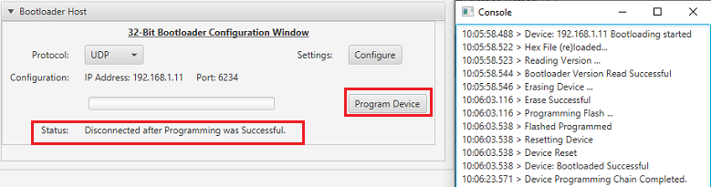

UDP Bootloader Unified Host Script Help
Downloading the host script
To clone or download these host tools from Github,go to the main page of this repository and then click Clone button to clone this repo or download as zip file. This content can also be download using content manager by following these instructions
Path of the tool within the repository is tools/UnifiedHost-*/UnifiedHost-*.jar
Version and Support information
-
Refer to tools/UnifiedHost-*/readme.txt for information on versions and known issues if any
-
UART Protocol is not supported in Harmony 3 using this tool
Description
-
This host script should be used to communicate with the UDP Bootloader running on the device
-
It implements the Unified bootloader protocol required to communicate from host PC
-
It sends the Normalized Hex File of the application to be bootloaded
Configuring and Using the Unified Host tool
- Configure the Host PC for setting up IP Address to communicate with the device
- Go to Control Panel/Network and Internet/Network Connections
- Open Ethernet properties

- Double Click on Internet Protocol Version 4 (TCP/IPv4)

- Configure the IP Address as shown below
- IP address : 192.168.1.12
- Subnet Mask : 255.255.255.0

-
Double click on tools/UnifiedHost-*/UnifiedHost-*.jar file to launch the Host application
-
Select the Device architecture and Protocol as shown below

- Select UDP Protocol
- Click on configure button to configure UDP port Number and IP Address

-
Load the test application hex file to be programmed using below option

-
Open the Console window of the host application to view application bootloading sequence

-
Click on Program Device button to program the loaded test application hex file on to the device

-
Following snapshot shows output of successfully programming the test application

Using Unified Host Tool in debugging mode
-
On Windows:
-
Launch Windows Command prompt in tools/UnifiedHost-*/ directory
-
Run below command to launch Unified Host Application in debugging mode
java -Djava.util.logging.config.file="logging.properties" -jar UnifiedHost-*.jar -
-
On Linux
-
For running Unified Host tool in debug mode on linux make use of MPLAB X’s Java JRE
-
Launch Linux Command prompt in tools/UnifiedHost-*/ directory
-
Run below command to launch Unified Host Application in debugging mode
/opt/microchip/mplabx/<MPLAB X Version>/sys/java/zulu8.40.0.25-ca-fx-jre8.0.222-linux_x64/bin/java -Djava.util.logging.config.file="logging.properties" -jar UnifiedHost-*.jar -
-
Once the tool is launched refer to steps mentioned above in Configuring and Using the Unified Host tool to program application hex
-
You can see the logs during programming sequence on the command prompt
-
Once done you can open the tools/UnifiedHost-*/app.log file and check for the programming sequence logs